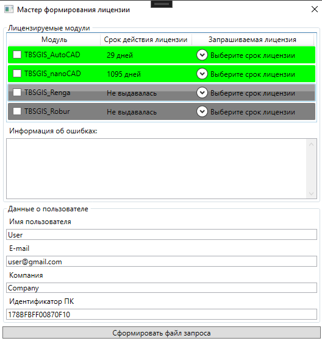
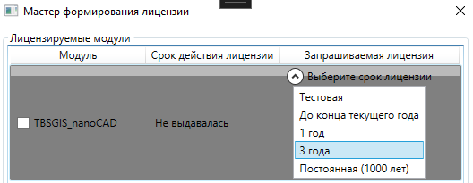
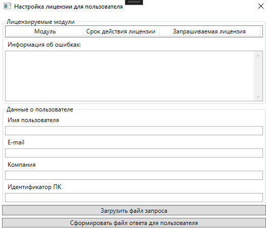
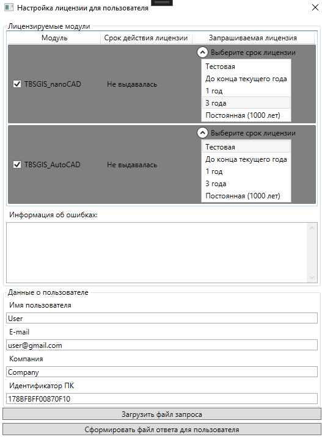
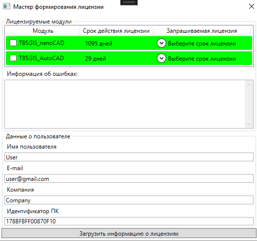

Лицензирование
В разделе описываются процессы оформления, отправки и загрузки информации о лицензии.
Плагины к САПР из состава TBS-GIS требуют наличия лицензии. В настоящее время все лицензии, как для физических, так и для юридических лиц, приобретаются только через компанию TBS. Все действия с лицензированием реализуются за счёт функциональности библиотеки TBS-LicenserLib и вспомогательной open-source библиотеки Standard.Licensing.
Вся информация о лицензиях сохраняется в локальную папку на ПК по адресу %APPDATA%\TBS\Licenses2 (она же C:\Users\USERNAME\AppData\Roaming\TBS\Licenses2); для одного модуля может быть только одна лицензия, информация о лицензии сохраняется в бинарный файл (сжатый XML), избегайте редактирования файлов во избежание их порчи. Информация о лицензии сохраняется в привязке к идентификатору процессора на ПК, поэтому файлы лицензий могут использоваться только на данном ПК. При смене процессора для активной лицензии напишите в поддержку для замены файла лицензии.
Все действия с лицензией совершаются через приложение TBS-GIS-ConfiguratorApp, прочтите о нём перед началом работы. При вызове любой функции, кроме справочной, для плагинов TBS-GIS выполняется запрос, имеет ли пользователь лицензию на данный плагин. Проверка выполняется 1 раз, если лицензия была загружена после, перезапустите данную САПР.
Запрос лицензии
Запустите приложение TBS-GIS-ConfiguratorApp с флагом -getLicense или воспользуйтесь скриптом scenario_Licensing_GetLicense.bat.

В форме в табличном виде будут подсвечены все лицензии для приложений TBS, как существующие, так и для отсутствующих модулей. Если лицензия на определенный модуль никогда не приобреталась, то во второй колонке будет соответствующая надпись, а сама строка будет окрашена в темно-серый цвет.
Если лицензия была раннее выдана и к настоящему времени окончилась, то строка будет выкрашена в красный цвет, а во второй колонке будет надпись "Просрочена".
Если лицензия активна, то строка будет выкрашена в зеленый цвет, а во второй колонке будет указан срок в днях действия лицензии.
В красный цвет будет также выкрашена позиция, для которой не была пройдена инициализация. Для вывода информации об ошибках выберите ЛКМ позицию таблицы, и в информация будет отображена в текстовом поле под таблицей.
Для запроса лицензии необходимо установить флажок в первой колонке для одного или нескольких модулей. Далее необходимо раскрыть выпадающий список в третьей колонке и указать желаемый срок для приобретаемой лицензии.

Всего возможны 5 сценариев: тестовая лицензия (30 дней), до конца текущего календарного кода, на 1 год с даты одобрения, на 3 года с даты одобрения, постоянная (на 1000 лет, так как неограниченную по времени нельзя поставить технически). Запрашиваемый вами вариант лицензии может быть изменен разработчиком по своему усмотрению (если лицензия выдается не на основании договора купли-продажи экземпляра ПО).
Также заполните информацию о себе - укажите в текстовых полях ваши Имя, контактный адрес электронной почты (предпочтительно, корпоративный адрес, по которому можно было бы Вас быстрее идентифицировать) и наименование компании, в которой вы работаете.
Заполнив информацию по всем запрашиваемым лицензиям нажмите на кнопку "Сформировать файл запроса" и укажите далее место сохранения результирующего XML-файла запроса лицензии.
Свяжитесь с менеджером TBS по одному из контактов и передайте ему сформированный файл.
Одобрение лицензии
Информация только для дистрибьюторов приложения.
Запустите приложение TBS-GIS-ConfiguratorApp с флагом -createLicense или воспользуйтесь скриптом scenario_Licensing_CreateLicense.bat. Рядом с исполняемым файлом должен быть TbsLicensesKeys2.xml, в противном случае формирование файла лицензии будет невозможно.
При запуске окно будет выглядеть так:

Загрузите файл запроса - выберите XML файл, присланный пользователем. В табличном виде, а также текстовых полях отобразится информация о пользователе, его ПК и запрошенных им лицензиях.

Все поля, цветовая идентификация строк соответствуют пользовательскому виду (цветовая идентификация для дистрибьютора не имеет значения, информация об ошибках нужна скорее для статистики). В зависимости от условий предоставления лицензии Вы можете как одобрить запрос пользователя, так и изменить выбранный пользователем срок лицензии в сторону уменьшения или увеличения, а также полностью отказать в продлении\приобретении лицензии -- для этого снимите флажок в первой колонке у соответствующего модуля.
Закончив действия, нажмите на "Сформировать файл ответа для пользователя" для сохранения файла, который необходимо будет передать Пользователю для самостоятельного импорта в приложение (см. следующий раздел). Сроки действия лицензии для установленного срока будут отсчитываться с даты нажатия на кнопку формирования файла ответа.
Импорт лицензии
Запустите приложение TBS-GIS-ConfiguratorApp с флагом -importLicense или воспользуйтесь скриптом scenario_Licensing_ImportLicense.bat.
Загрузите файл ответа, полученный от дистрибьютора. В табличном виде отобразится информация о лицензиях из файла. Если они были одобрены, то цветовая идентификация станет зеленой. Не-одобренные лицензии не будут выгружены в файл ответа.

Информация о всех доступных лицензиях приведена в окне "Запрос лицензии".